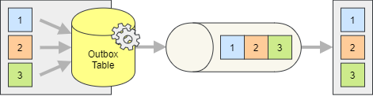

Transactional Outbox
The transactional outbox pattern purpose is to reliably update the database and publish the messages in the same atomic transaction. This is achieved storing the outbound messages into a temporary outbox table, whose changes are committed together with the other changes to the rest of the data.
{kind=link}

To implement the outbox you need to reference the storage package for the database you are using, or the one for Entity Framework if you are using it. More details can be found in the Storage Integration guide.
The messages can be published to the outbox using the regular IPublisher but they will be stored in the outbox table and produced by the outbox worker.
Important
The current OutboxWorker cannot scale horizontally and starting multiple instances will cause the messages to be produced multiple times. The outbox worker relies therefore on the distributed locks to ensure that only one instance is running at a time.
Configuration
A few things need to be configured to enable the outbox:
- The outbox table must be created in the database (unless using Entity Framework)
- The outbox worker must be configured to process the outbox table
- The desired endpoints must be configured to use the outbox
services
.AddSilverback()
.WithConnectionToMessageBroker(options => options
.AddKafka()
.AddEntityFrameworkOutbox()
.AddOutboxWorker(worker => worker
.ProcessOutbox(outbox => outbox
.UseEntityFramework<AppDbContext>()))))
.AddKafkaClients(clients => clients
.WithBootstrapServers("PLAINTEXT://localhost:9092")
.AddProducer("producer1", producer => producer
.Produce<MyMessage>("endpoint1", endpoint => endpoint
.ProduceTo("my-topic")
.StoreToOutbox(outbox => outbox
.UseEntityFramework<AppDbContext>()))));
Important
The endpoints must have a name assigned to be able to store the messages in the outbox. The name is used by the outbox worker to uniquely identify the actual target endpoint.
Transactionality
You most probably want the writing to the outbox to be part of the same transaction as the other changes to the database. This is not done automatically, and you need to begin and enlist the transaction manually.
await using (IDbContextTransaction transaction = await dbContext.Database.BeginTransactionAsync())
{
publisher.EnlistDbTransaction(transaction.GetDbTransaction());
await publisher.PublishAsync(...);
await publisher.PublishAsync(...);
await publisher.PublishAsync(...);
await transaction.CommitAsync();
}
The example above shows how to use Entity Framework, but the same applies to any other database access library. The important part is to enlist the transaction in the publisher before publishing the messages.
This step is required even if using the EntityFrameworkDomainEventsPublisher<TDbContext> to automatically publish the domain events when saving the changes to the database.
Entity Framework DbContext
When using Entity Framework, the DbContext must be configured to include the outbox and the locks table (if used). The tables must be provisioned via migrations or by creating them manually.
private class AppDbContext : DbContext
{
...
public DbSet<SilverbackOutboxMessage> Outbox { get; set; } = null!;
public DbSet<SilverbackLock> Locks { get; set; } = null!;
}
Distributed Lock
The default locking mechanism from the selected storage package is automatically used (custom locks table for Entity Framework, advisory locks for PostgreSQL, in-memory for Sqlite, etc.), but you can customize this. The following example shows how to leverage PostgreSQL advisory locks with Entity Framework.
.AddOutboxWorker(worker => worker
.WithDistributedLock(distributedLock => distributedLock
.UsePostgreSqlAdvisoryLock(connectionString))
.ProcessOutbox(outbox => outbox
.UsePostgreSql(connectionString)))
Note
Both advisory locks and the custom locks table are implemented in the PostgreSQL storage package. The advisory locks are used by default, but you can switch to the custom locks table using UsePostgreSqlTable.
Provisioning the Required Tables
The outbox table and the locks table (if used) must be created in the database. If you are using Entity Framework, you can create the tables by running the migrations. If you are using a different storage package, you can normally use the SilverbackStorageInitializer to create the necessary tables.
storageInitializer.CreateSqliteOutboxAsync(connectionString);
Health Check
A health check is available to monitor the outbox and alert if messages are taking too long to be produced or the queue is growing too much.
.AddHealthChecks()
.AddOutboxCheck(
maxAge: TimeSpan.FromSeconds(30),
maxQueueLength: 100)